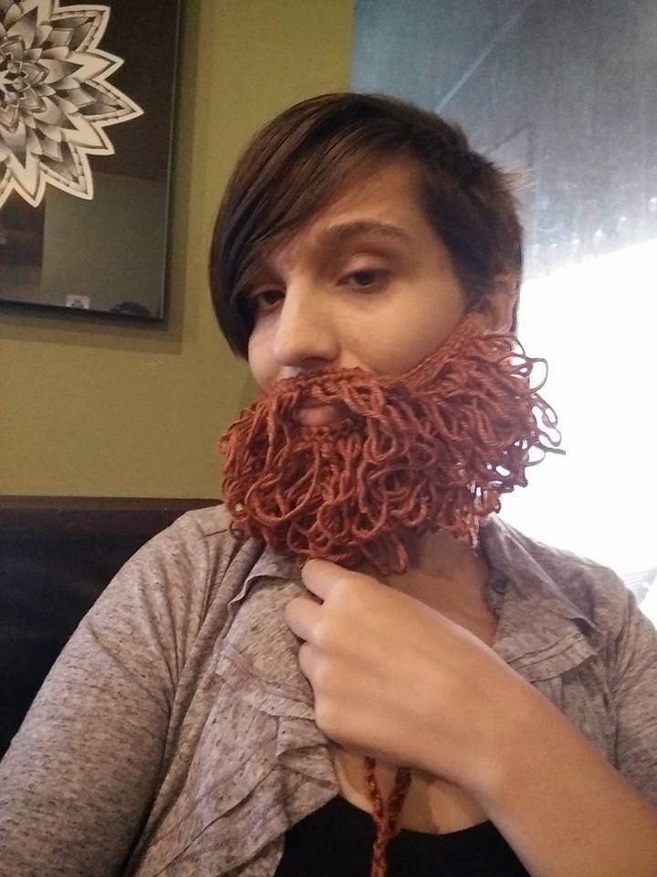
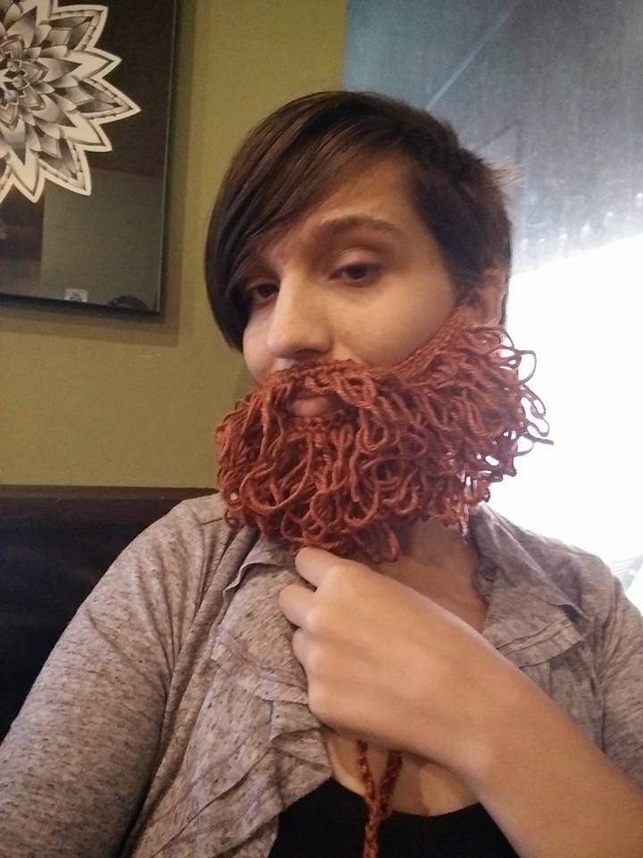
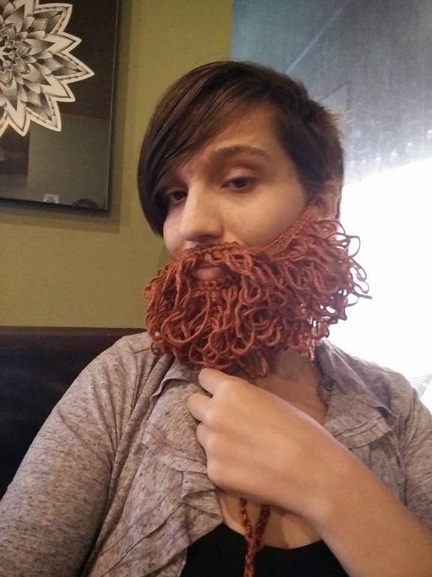

Home
Contact Us
Other Links
Crochet Beards
This is a page dedicated to the joys of making and wearing crocheted beards.
Some Beards

Why should you own a crocheted beard?
Keeps your face warm!
Fashionably authoritative
Get rid of your homegrown beard for a handmade one.
 
